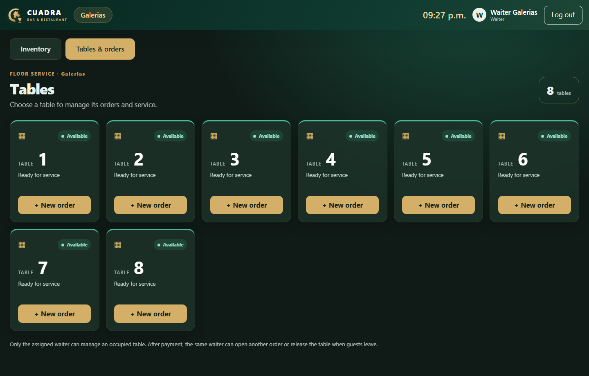
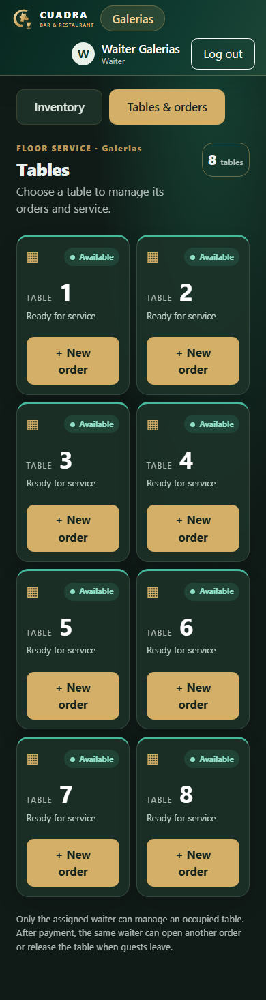
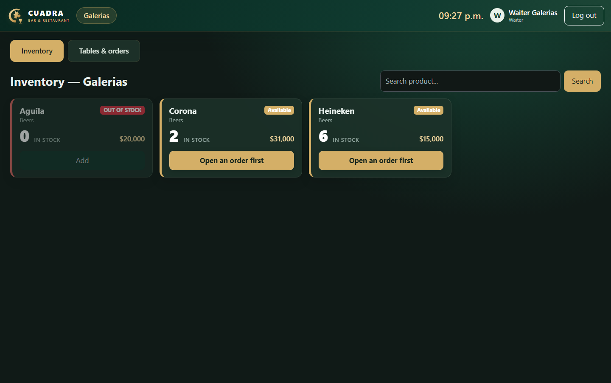
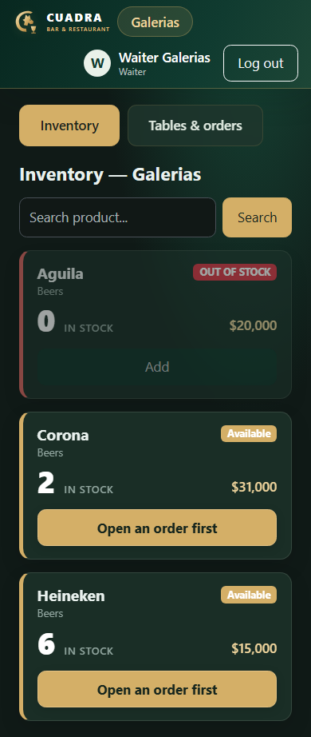

CUADRA · Auditoría visual (waiter)
Generado 2026-10-25T21:27:54. Evaluación heurística, no certificación WCAG.
Tables · 0 alertas
/orders/
Captura desktop

Captura mobile

Alertas de contraste (requieren revisión)
Inventory · 4 alertas
/inventory/
Captura desktop

Captura mobile

Alertas de contraste (requieren revisión)
- desktop · 2.07:1 · span.badge.text-bg-success · Available
- desktop · 2.07:1 · span.badge.text-bg-success · Available
- mobile · 2.07:1 · span.badge.text-bg-success · Available
- mobile · 2.07:1 · span.badge.text-bg-success · Available